Manuchie · symbol proposals, round 2 · 29 October 2026
Following the brief, each is a single figurative mark in the spirit of the All The Glory dove: one luminous white form, warm gold light around it, nothing else. This time each mark is drawn from Manuchie himself. The outlines come from his own portraits: the high-top with its sharp line-up, the sunglasses, the full beard, the chain, and a music director’s hand.
Each one is shown on near-black (the primary) and on a light ground, at 180, 48, 32 and 16 px, and as a round profile picture.
01
His profile, turned toward a burst of gold.
Drawn over the terracotta portrait on the site. The textured high-top and its sharp line-up, the sunglasses, the full beard and the chain make it him and nobody else.
The light sits in front of him, where he is looking, rather than behind his head. It is light he faces, not a halo. A fine gold arc carries it round, as the arc does in the dove.
At 48 px and below it simplifies to two tones, bold lenses and a gold sun.
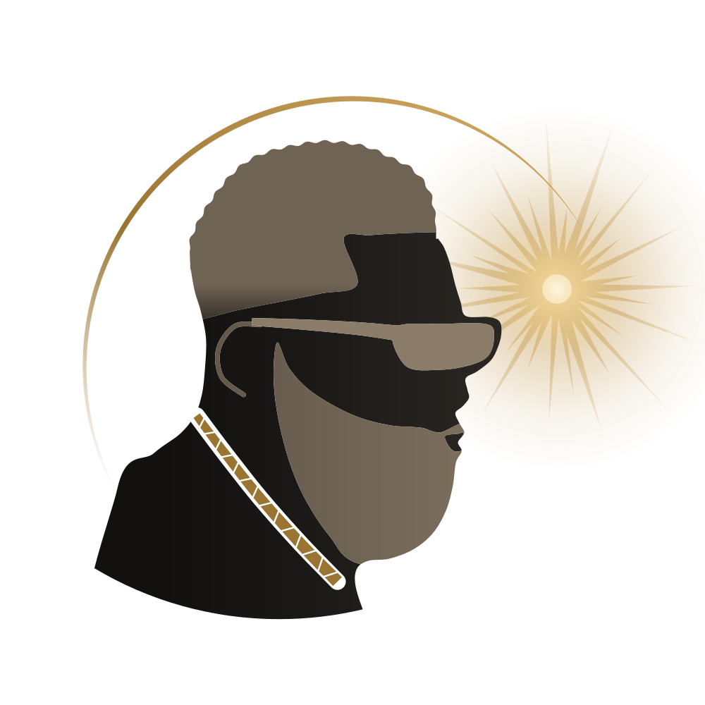
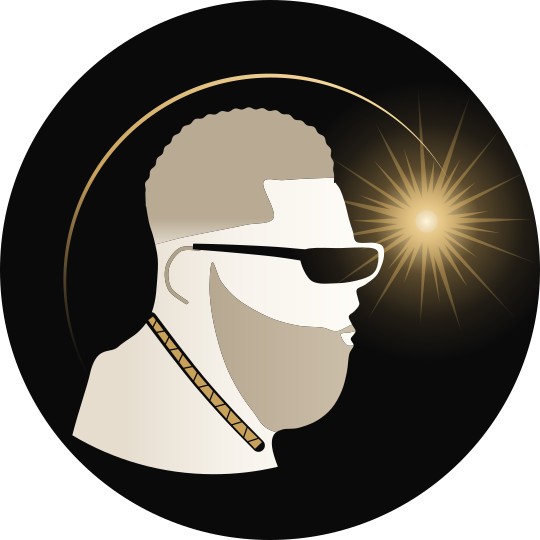
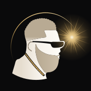
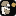
02
A music director’s raised hand, the moment before the downbeat.
The hand a music director raises to hold a room before bringing the band in. It is also the open hand of worship. Its fingertips meet the gold burst, and the arc closes round it.
His craft rather than his face: the one personal detail is the watch at the wrist. The forearm fades away below, as the dove’s tail does.
At 16 px the hand is redrawn pixel by pixel.
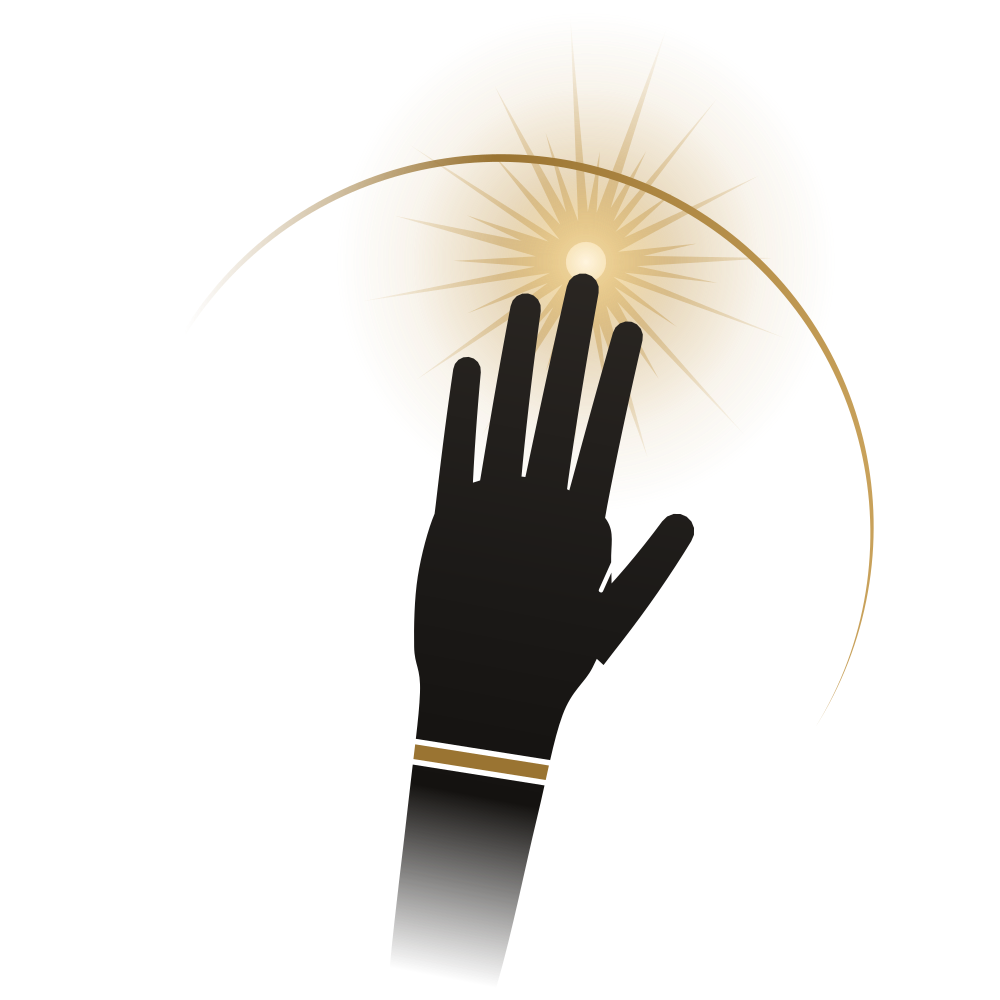
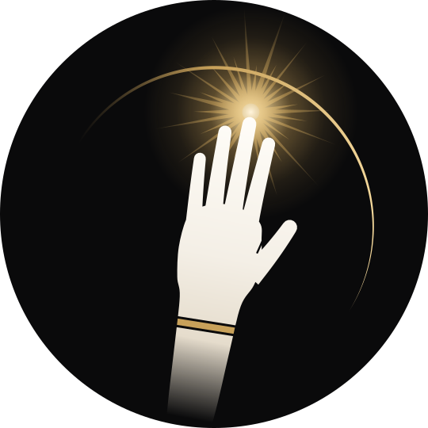
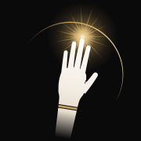
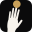
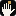
Board: boards/02-the-cue.png
03
The same portrait, face raised into shafts of light from above.
The worship-rays imagery of the “Been So Good” film, turned into a mark: his head lifted toward light that falls from above. The mood is praise rather than contemplation.
The drawing is the one used in Facing the Light, cropped tighter, with no arc and no burst. Here the light is beams, which also crop well into banners and video end-cards.
At small sizes it keeps two or three beams and the two-tone head.
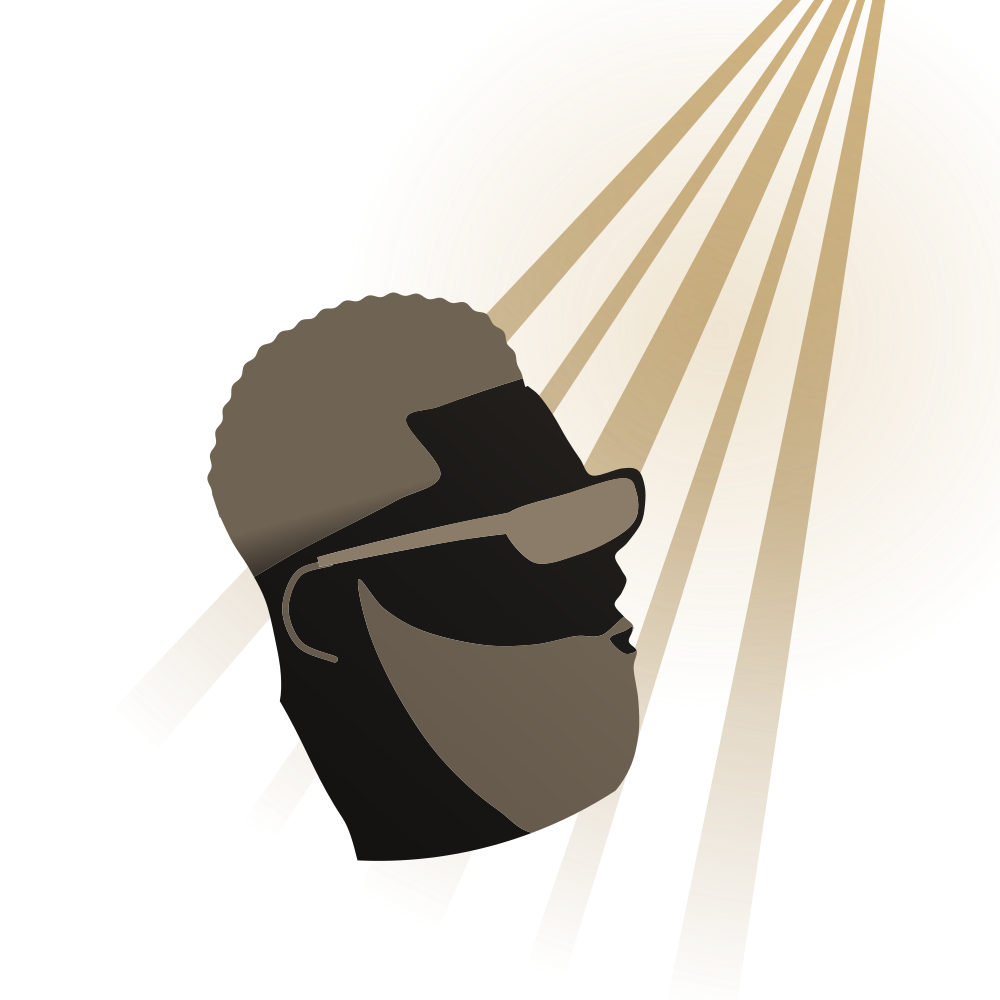
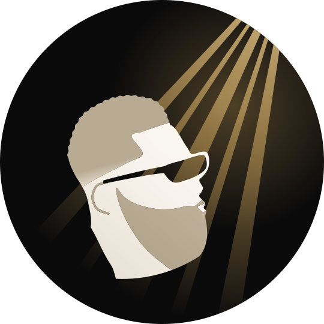
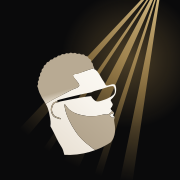
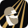
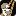
Board: boards/03-lifted.png